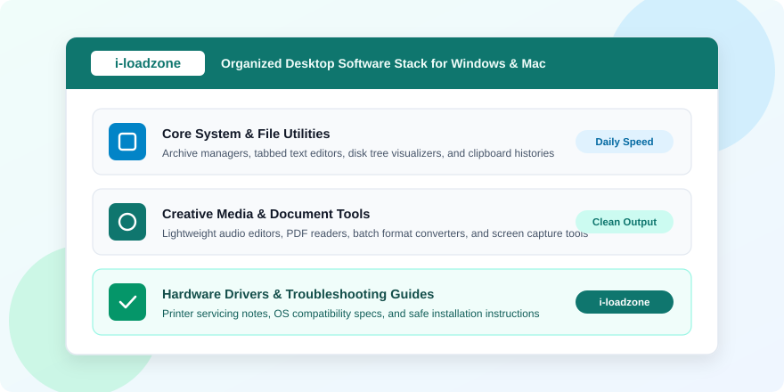
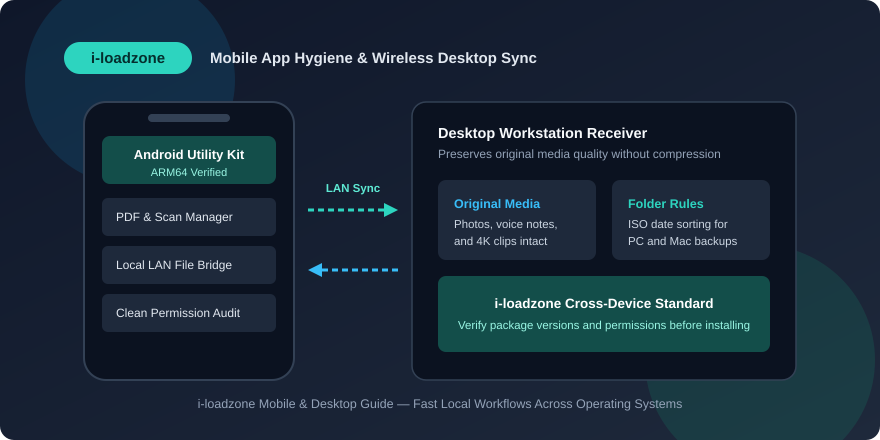
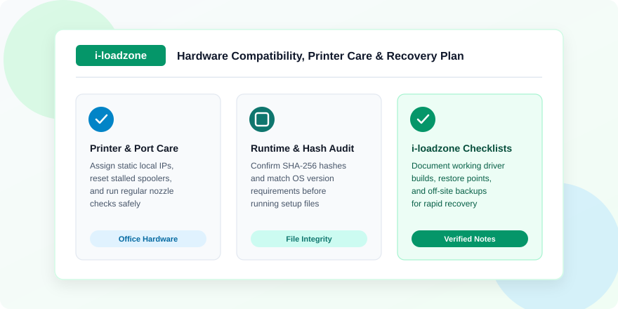

Why Do Multi-Device Users Trust i-loadzone for Tech and Software Guides?
Modern personal technology rarely lives inside a single operating system anymore. Students carry Android phones in their pockets, type assignments on Windows desktops at home, collaborate with classmates using Mac laptops in study halls, and print handouts on shared Wi-Fi inkjet printers down the hall. Because each platform speaks a slightly different technical dialect, keeping everyday software tools aligned across devices often feels harder than the actual work you sat down to finish.
When a file archive fails to open, a desktop printer suddenly refuses network jobs, or an audio editor begins stuttering after a system update, most people do not want thirty pages of academic theory. They want concise, trustworthy guidance explaining which category of utility solves the task cleanly, what system prerequisites apply, and how to test changes safely without risking personal files.
Throughout this in-depth guide, we examine the everyday realities of multi-device computing—from assembling a fast Windows and macOS utility stack and syncing mobile media over local networks to maintaining office printers, auditing file hashes, and building resilient recovery kits. Every principle focuses on clarity, speed, and dependable long-term stability.
The Reality of Everyday Multi-Platform Computing
Years ago, households typically standardized around one desktop PC running all family software under a single roof. Today, work and study flow fluidly across screens. You might capture whiteboard photos or voice memos on an Android smartphone during a morning commute, draft structured outlines on a MacBook over lunch, and compile final spreadsheets or multi-track audio edits on a Windows tower in the evening.
That cross-device agility unlocks real convenience, yet it also exposes awkward friction whenever file formats, folder naming rules, or platform utilities clash. A compressed archive created with macOS hidden metadata folders looks messy on Windows; a raw phone recording sent through a chat app arrives heavily compressed; and a specialized office utility installed blindly without checking 64-bit requirements throws cryptic runtime errors on launch.
Why Plain-Language Guides Outperform Marketing Pages
Official vendor landing pages naturally emphasize flashy headline features while burying system compatibility tables, memory footprints, and prerequisite libraries deep inside support submenus. Structured tech reference hubs bridge that gap by summarizing practical facts up front: which operating systems a utility supports, whether portable builds exist, how large the package is, and what common configuration mistakes newcomers should avoid.
Clear documentation also helps users match tool weight to real hardware. Installing an enterprise creative suite just to crop screenshots or normalize a three-minute spoken intro wastes gigabytes of solid-state storage and slows startup times needlessly. Picking focused, purpose-built utilities keeps even modest laptops snappy for years.

Building a Balanced Windows and macOS Utility Stack
Regardless of whether your primary desk holds a Windows desktop or an Apple laptop, the core layers of a reliable software environment stay remarkably similar. Separating daily utilities from heavy project suites prevents overlapping background helpers and simplifies troubleshooting whenever something updates.
Fast Text Editors, Clipboard Managers, and Window Grids
Every computer benefits immediately from three foundational productivity habits: a quick plain-text editor, a searchable clipboard history, and predictable window snapping. Plain-text code and configuration editors open massive logs, Markdown notes, CSV tables, and HTML drafts instantaneously without inserting hidden styling tags or smart quotes. Multi-item clipboard histories eliminate repetitive window switching when copying reference links, invoice numbers, or command snippets between spreadsheets and emails.
Window tiling utilities take full advantage of widescreen monitors and dual-display desks. Snapping your writing canvas cleanly beside a PDF manual or file explorer removes tiny dragging delays that quietly drain focus across an eight-hour workday.
File Archivers, Batch Renamers, and Storage Visualizers
Working with project bundles inevitably brings compressed archives, bulky camera imports, and crowded download folders. Keeping a clean multi-format archive manager ensures smooth handling across ZIP, 7Z, and TAR files while allowing integrity tests before unpacking large folders. Rule-based batch file renamers turn disorganized folders of `IMG_0412.jpg` photos or raw voice clips into clean, sequentially dated project assets in seconds.
Meanwhile, visual disk usage scanners reveal exactly which directories consume boot drive space—making it easy to spot forgotten render caches, duplicated backups, or oversized installer archives before storage drops below healthy thresholds.
Document Viewers, PDF Tools, and Lightweight Media Playback
Opening routine manuals or client invoices should take milliseconds, not wait on bloated suites spawning cloud login prompts. Pairing a fast, clean PDF reader with a reliable document converter keeps office formatting intact across formats. For audio and video review, classic lightweight media players decode MKV, MP4, FLAC, and WAV smoothly with frame-accurate stepping and crisp subtitle support while leaving system memory free for active work.
| Desktop Layer | Primary Goal | Recommended Habit | Common Pitfall to Avoid |
|---|---|---|---|
| System & File Helpers | Fast text editing, archiving, and disk clarity | Use lightweight modular utilities and portable builds | Installing three overlapping context-menu shell tools |
| Document & Office Flow | Clean PDF reading and universal formatting | Standardize on UTF-8 text and embedded PDF fonts | Relying on heavy cloud viewers for simple local files |
| Audio & Video Stack | Crisp voice editing and smooth media playback | Keep separate scratch folders outside synced drives | Installing conflicting legacy codec filter packs |
| Hardware & Peripherals | Stable printing, scanning, and USB throughput | Match exact model IDs and save working backups | Updating working drivers without a restore checkpoint |
Managing Browser Profiles, Bookmarks, and Password Security
Web browsers carry nearly as much daily workload as native desktop software, yet most users leave everything crammed inside a single unorganized browser profile loaded with twenty half-forgotten extensions. Separating personal reading, office administration, and media uploads into dedicated browser profiles immediately cuts memory usage and prevents accidental cross-account sign-in mix-ups.
Keeping extensions lean matters just as strongly. Every active browser add-on runs background listeners across open tabs; trimming unused coupon trackers, redundant screenshot helpers, and heavy tab skins restores fast page scrolling on eight-gigabyte laptops. Combine tidy profiles with an encrypted password manager supporting cross-platform autofill across Windows, macOS, and Android so unique credentials never rely on sticky notes or browser-reused shortcuts.
Understanding macOS Gatekeeper, Permissions, and Disk Cleanup
Users transitioning between Windows PCs and MacBooks often run into Apple’s stricter execution safeguards for the first time. On macOS, Gatekeeper verifies developer notarization signatures automatically before launching newly downloaded `.dmg` or `.pkg` software bundles, while Privacy & Security settings prompt explicitly before an editor can read Documents, Desktop, or external microphone hardware.
Understanding how macOS packages applications makes cleanup far simpler too. Dragging a standalone `.app` bundle from `/Applications` to Trash removes the main binary, yet preference files and cache folders often remain inside `~/Library/Application Support` and `~/Library/Caches`. Periodically reviewing leftover application caches and clearing bloated iOS device backups frees dozens of gigabytes on compact MacBook solid-state drives cleanly without touching active personal projects.
Connecting Android Mobile Tools Cleanly With Desktop Workstations
Android smartphones have evolved into remarkably capable field assistants. Whether scanning multi-page paper contracts at a client office, recording quick podcast interviews with a portable lavalier microphone, or managing project checklists on the road, mobile apps complement desktop software closely—provided transfers and permissions remain disciplined.

Avoiding Quality Loss During Phone-to-PC Transfers
One of the most common workflow mistakes occurs when users email photos to themselves or send video clips through messaging apps just to move them onto a Windows or Mac computer. Almost every chat platform quietly strips metadata and recompresses images and videos aggressively to save server bandwidth, leaving screenshots blurry and audio muffled.
Using either a direct USB data cable configured for File Transfer mode or a lightweight local-network file transfer utility sends full-resolution media across your home router in seconds with zero quality degradation. Keeping a dedicated incoming folder on your desktop—sorted automatically into clean project subfolders—prevents mobile imports from getting lost inside cluttered Downloads directories.
Auditing Mobile App Permissions and CPU Architecture
Just like desktop freeware, mobile utility apps deserve careful review before installation. Confirming that a companion app requests only permissions directly tied to its purpose—such as storage picker access for a file manager or microphone access for a voice recorder—protects battery endurance and personal privacy alike. Checking Android operating system minimums and processor architectures such as arm64-v8a also prevents frustrating crashes on older backup phones or tablets.
Creative Audio, Screen Capture, and Visual Branding Without Bloat
Independent educators, bloggers, and remote trainers increasingly handle audio recording, screen tutorials, and graphic thumbnails themselves. Producing crisp, professional-looking deliverables does not require expensive studio workstations; it depends on pairing modest hardware with clean, focused desktop tools.
Recording Clear Spoken Audio and Tutorials
Listeners notice audio clarity immediately. Recording in a quiet corner away from spinning fans, placing a USB microphone a hand-span away at a slight off-axis angle, and capturing dry voice tracks inside a clean desktop audio editor sets up great results. Removing steady room hum gently, trimming awkward breathing gaps, leveling loudness consistently, and archiving lossless WAV masters alongside web-ready MP3 files keeps episodes sounding polished across laptops and car speakers alike.
When pairing screen capture with spoken narration, isolating microphone audio onto its own dedicated track separate from desktop system sounds gives you full editing freedom later. Capturing interface menus at native 1080p and thirty frames per second preserves razor-sharp text legibility without bloating storage drives with multi-gigabyte raw dumps.
Maintaining Crisp Vector Logos and Web Thumbnails
Visual consistency across blogs, documentation portals, and social previews relies on matching the right graphics format to each job. Scalable vector graphics (SVG) and clean vector layouts keep logos, badges, diagrams, and technical callouts razor-sharp at any display density while keeping file weights tiny for fast web loading. Meanwhile, raster photo editors handle camera lighting adjustments, subtle color grading, and exact thumbnail cropping for wide banners and square cards.
Organizing Source Projects and Exported Masters
Creative directories stay easy to navigate when raw source recordings, editable vector templates, and final compressed exports occupy cleanly separated subfolders. Keeping uncompressed WAV voice tracks and source SVG graphics archived neatly ensures you can refresh an episode cover, tweak background volume, or update a diagram label months later without rebuilding projects from scratch.
Servicing Office Printers, Scanners, and USB Peripherals
Few workplace disruptions feel more frustrating than an office printer stalling right when signed forms or shipping labels need to go out. Understanding how print queues, wireless port bindings, scanner services, and internal printer maintenance routines operate saves both service calls and unnecessary hardware replacement.

Fixing Persistent Print Spooler and Offline Printer Errors
When a Windows workstation displays "Printer Offline" even though the printer sits powered on beside your desk, the issue rarely lies in physical cables. Frequently, the home router reassigned a new dynamic IP address to the wireless printer overnight while Windows kept targeting the stale address via WSD discovery. Assigning a static IP lease to the printer inside your router’s DHCP table—and configuring a standard TCP/IP printer port pointing to that fixed address—eliminates disappearing network printers permanently.
If a malformed PDF document locks up the Windows Print Spooler itself, stopping the Print Spooler service momentarily, deleting stuck `.SPL` and `.SHD` temporary queue files from the system spool folder, and restarting the service clears the logjam cleanly without uninstalling drivers.
Preventive Inkjet Nozzle Care and Waste Pad Awareness
Inkjet printers stay healthiest through gentle, regular motion rather than long months of idleness followed by repeated heavy head-cleaning runs. Printing a quick color nozzle check pattern once every week or two keeps microscopic printhead channels clear while conserving ink. For high-volume offices running tank-based printers, understanding model-specific maintenance boxes, replaceable absorber pads, and authorized servicing resets prevents sudden lockouts and messy ink leaks inside the chassis.
Restoring Scanner Connections and Reliable USB Power
Multi-function printers sometimes continue printing normally while scanning stops responding across Windows updates. Checking that the Windows Image Acquisition (WIA) service remains set to automatic, ensuring private network firewall profiles allow local scanner discovery, and plugging external scanners or audio interfaces directly into powered rear motherboard USB ports—rather than weak unpowered hubs—resolves stubborn connection timeouts smoothly.
Verifying Downloads, Checksums, and Safe Setup Routines
Good digital hygiene starts long before any installer finishes running. Developing a fast, thirty-second pre-setup verification routine protects workstations against truncated transfers, unwanted adware toolbars, and conflicting system modifications.
- Confirm exact operating system and architecture fit: Verify whether a utility targets 64-bit Windows 10/11, Apple Silicon or Intel macOS builds, or Android arm64 before downloading large packages.
- Verify file sizes and cryptographic hashes: Comparing downloaded byte counts and running a quick SHA-256 checksum check catches silent transfer corruption before unpacking archives.
- Choose custom installation views: Always expand custom setup tabs during freeware installation to skip bundled sponsor extensions, inspect destination paths, and control startup entries.
- Create a System Restore point ahead of driver changes: Taking thirty seconds to save a named Windows restore checkpoint before updating audio, graphics, or chipset packages provides a clean one-click fallback.
- Audit Task Manager startup items monthly: Disable automatic background updaters and tray launchers for tools you only open occasionally so boot times remain crisp.
Recognizing Clean Release Changelogs Before Updating
Before replacing a dependable desktop utility with a newer version, skim its release notes carefully for breaking dependency changes, altered export presets, or discontinued legacy operating system support. Timing major upgrades calmly between active project milestones—while preserving an installer archive of your working prior release—ensures you stay protected against surprise regressions without missing helpful security and stability patches.
Troubleshooting Stubborn Software Errors Without Guesswork
Even carefully maintained workstations occasionally hit unexpected application crashes or network hiccups after major operating system patches. Replacing panic with a structured four-step isolation check solves most software glitches rapidly.
Inspecting Logs, Runtimes, and User Profile Caches
When an app exits silently immediately after double-clicking, Windows Event Viewer’s Application log or macOS Console crash reports almost always name the exact faulting module. Frequently, a fresh desktop utility simply expects a missing Visual C++ Redistributable runtime or .NET Desktop framework version. Other times, testing the exact same program inside a fresh secondary local user account proves within sixty seconds that corrupted per-user AppData caches—not the operating system itself—caused the freeze.
Separating Local Firewall Blocks From Internet Outages
If one desktop tool loses internet reachability while your web browser works normally, check Windows Defender Firewall outbound rules, VPN split-tunnel configurations, and stale DNS caches before reinstalling the software. Flushed DNS caches and temporary firewall rule checks pinpoint blocked ports quickly without altering unrelated networking settings.
Network Speed Testing, Router Hygiene, and Local DNS Tips
Slow software downloads, stalled cloud backups, and jittery video calls often get blamed on desktop hardware when the true bottleneck sits inside household networking equipment. Checking whether sluggishness occurs exclusively on one wireless laptop or across wired Ethernet connections quickly separates local Wi-Fi interference from upstream internet service provider congestion.
Simple router habits pay steady dividends across every computer and phone in the home. Placing dual-band wireless routers away from thick concrete corners and microwave ovens, assigning five-gigahertz bands to laptops and desktops while keeping older smart printers on two-point-four gigahertz, and restarting consumer routers periodically to clear memory leaks keeps throughput steady. Switching workstation DNS resolvers cleanly to trusted, low-latency public DNS servers or flushing stale operating system DNS caches after domain changes also eliminates mysterious "site cannot be reached" errors during daily research.
Using Download Managers for Large Multi-Device Archives
Whenever transferring multi-gigabyte system images, creative asset libraries, or offline documentation packs over unstable rural connections, standard browser downloaders often restart from zero if Wi-Fi flickers at ninety percent. Purpose-built download utilities support clean pause-and-resume recovery, verify server timestamps, and organize finished files straight into dedicated installer directories rather than flooding temporary caches.
Managing Portable Toolkits and Offline Rescue Drives
IT technicians and organized power users appreciate portable applications—utilities configured to store executables, plugins, and preferences inside one self-contained folder without scattering settings across system registries. Carrying a curated portable utility kit on an encrypted USB flash drive or secondary partition lets you bring familiar text editors, disk analyzers, and archive tools onto any workstation cleanly.
Building an Emergency Recovery USB for Every Household
Alongside everyday portable utilities, dedicating one labeled flash drive exclusively as a recovery kit protects against worst-case boot failures. Include a bootable operating system rescue image, exported network and chipset driver backups for each family laptop, lightweight RAM and SSD diagnostic tools, and printed or encrypted offline recovery keys. When an unexpected update ever interrupts normal startup, having everything ready in one drawer turns hours of stress into calm recovery.
Creating a Quarterly Cross-Device Maintenance Rhythm
The secret behind effortless computers is consistency rather than marathon weekend overhauls. Setting aside twenty quiet minutes once every quarter keeps laptops, phones, and office peripherals performing smoothly year after year.
During each quarterly checkup, review installed programs and remove trial tools you have not opened recently, empty spent download archives, check S.M.A.R.T. SSD wear metrics and battery charge health, test a quick file restoration from your external backup drive, and print a single printer nozzle check page. Keeping a brief plain-text setup log documenting your core tools, router printer reservations, and backup schedules ensures you can migrate onto a brand-new machine smoothly whenever hardware upgrades arrive.
Documenting Essential Drivers, Settings, and Recovery Contacts
Many hours of troubleshooting disappear the moment you maintain a simple one-page workstation ledger stored alongside your off-device backups. Note each computer’s exact motherboard or laptop model, wireless adapter chipset, printer static IP address, preferred audio loudness targets, and which backup USB holds exported offline drivers. Whenever a friend asks how you fixed a stubborn scanner queue or when you set up a fresh secondary laptop for travel, every proven configuration sits neatly documented in plain English ready for immediate reuse.
Frequently Asked Questions About Multi-Device Tech Guides
Why is it helpful to keep software guides organized across Windows, Mac, and Android?
Most people now use multiple platforms every day. Organized guides save time by explaining compatible file formats, matching platform-specific utilities, and clarifying setup differences up front instead of forcing users to piece together conflicting forum posts.
How can I verify that an archive or installer downloaded cleanly?
Check that the downloaded file size matches the documented package size, run an archive integrity test inside your zip extractor before unpacking files, and verify SHA-256 checksums using your system terminal whenever reference hashes are provided.
What causes wireless office printers to go offline repeatedly?
Dynamic IP changes assigned by home routers often break Windows WSD printer discovery links after power cycles or overnight sleep. Assigning a permanent DHCP reservation inside your router settings and binding the printer via a standard TCP/IP port keeps connections reliable.
Should I always keep creative scratch folders inside cloud sync drives?
No. Cloud sync clients continuously scan and upload modified files, which can compete with SSD bandwidth while editing video or multitrack audio. Keep active scratch folders local and move only finished master files into cloud backup folders.
How do portable utilities help keep a main workstation fast?
Portable utilities run from self-contained folders without writing permanent registry entries or registering background startup services. They allow clean evaluation and effortless migration across multiple computers without accumulating system clutter.
What is the simplest backup rule for everyday laptops and creators?
Combine quick operating-system checkpoints—such as Windows System Restore or macOS Time Machine—with off-device data protection by keeping active work on your primary drive, regular incremental backups on an external SSD, and archived masters stored safely in encrypted cloud storage.
Closing Thoughts on Reliable Everyday Technology
Technology works best when it stays predictable, fast, and easy to understand. Whether you are configuring a fresh desktop workstation, keeping mobile media transfers crisp, servicing an office printer cleanly, or organizing portable IT tools for emergencies, clear documentation eliminates unnecessary guesswork. Focusing on lean software choices, careful pre-install verification, and calm quarterly maintenance empowers every user to spend less time troubleshooting and more time doing meaningful creative and professional work.
Over time, adopting small, repeatable technical habits pays compounding dividends across every screen you own. Instead of feeling overwhelmed by platform shifts across Windows, macOS, and Android, you gain a dependable framework—knowing how to test updates safely, isolate network or printer bottlenecks calmly, preserve crisp media quality, and recover cleanly from unexpected hiccups without losing valuable project hours. Whether managing a solo study laptop or supporting an entire small-office desk lineup, consistent clarity keeps every device dependable. Good preparation makes everyday troubleshooting faster, safer, and far less stressful over the long term.